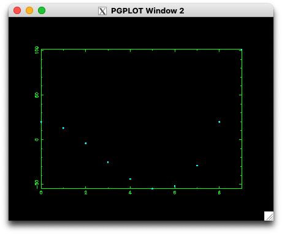

Day 3: Perl Data Language on the Mac

So, you've got yourself a shiny new MacBook and you want to give PDL a spin. Lucky you, because the OG author of PDL just got one recently and made an installer to save you a bunch of work. It works pretty much for Monterey through to Sonoma, buuuuut ... of course my machine happens to be running Sequoia 15.1, the latest release, which is not yet listed as having been tested but I believe in Santa and Santa believes in me!
I'm a Homebrew fan because it simplifies my life when installing third party software on the Mac. Part of me wants to see what the minimum requirements are to get PDL up and running, but Life's Too Short.
Homebrew has formulae for PLPlot, Gnuplot, GD for graphics, the HDF library and Gnu Scientific Library as well as the X11 server needed for the PGPLOT demos. There's a bit of discussion about how XQuartz is to be replaced by Apple's Metal, but for now it looks best to stick with XQuartz. Go for Maximum Install!
brew install plplot gnuplot gd hdf5 gsl
brew install --cask xquartz
Now, does your MacBook have the Intel chip or the newer M1 chip found in post-2020 machines?
Figure that out and go to the Instructions,
which consist of downloading the correct release,
open the .dmg file, drag and drop the image onto the Applications folder icon that's just popped up.
Done.
(yes, it is that easy)
If you rush to click on the pdl> icon and get surprised by this error popup,
it means that you haven't read further down the README where it informs you not to panic,
Edit and Save the file (you won't see a Save button, but you just ⌘ S or File > Save)

For running the PGPLOT demo, you'll need to start the Xserver and if it says it can't connect,
try rebooting, starting the Xserver and entering the pdl shell.
If that still doesn't work,
open a terminal and follow the Running SciPDL instructions to set the environment and type pdl at the prompt.
Parabolas are boring. Here's a cubic instead.
pdl> use PGPLOT
pdl> use PDL::Graphics::PGPLOT
pdl> $ENV{PGPLOT_XW_WIDTH} = 0.3
pdl> dev('/XSERVE')
pdl> $x = sequence(10)
pdl> $y = $x**3 - 8 * $x**2 + 20
pdl> points $x, $y

You'll have an excellent imagination to see the outline of Santa's pipe in the above plot, no doubt inspired by a mince pie or two!
apple logo by zolierdos is licensed under CC BY-SA 2.0

Boyd Duffee
Boyd has wanted to learn PDL for many years and realizing that dream is bringing him joy. He has done mad things to Complex Networks with NLP and is moving on to DSP and Time Series Analysis. He's interested in Data Science, Complex Networks and walks in the woods.